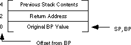

|
Table of Content | Chapter Eleven (Part 6) |
|
Table of Content | Chapter Eleven (Part 6) |
| CHAPTER ELEVEN: PROCEDURES AND FUNCTIONS (Part 5) |
| 11.5.10 - Passing Parameters in the Code Stream |
Another place where you can pass parameters is in the code
stream immediately after the call instruction. The print routine
in the UCR Standard Library package provides an excellent example:
print
byte "This parameter is in the code stream.",0
Normally, a subroutine returns control to the first
instruction immediately following the call instruction. Were that to happen
here, the 80x86 would attempt to interpret the ASCII code for "This..." as an
instruction. This would produce undesirable results. Fortunately, you can skip over this
string when returning from the subroutine.
So how do you gain access to these parameters? Easy. The
return address on the stack points at them. Consider the following implementation of print:
MyPrint proc near
push bp
mov bp, sp
push bx
push ax
mov bx, 2[bp] ;Load return address into BX
PrintLp: mov al, cs:[bx] ;Get next character
cmp al, 0 ;Check for end of string
jz EndStr
putc ;If not end, print this char
inc bx ;Move on to the next character
jmp PrintLp
EndStr: inc bx ;Point at first byte beyond zero
mov 2[bp], bx ;Save as new return address
pop ax
pop bx
pop bp
ret
MyPrint endp
This procedure begins by pushing all the affected registers
onto the stack. It then fetches the return address, at offset 2[BP], and
prints each successive character until encountering a zero byte. Note the presence of the cs:
segment override prefix in the mov al, cs:[bx] instruction. Since the
data is coming from the code segment, this prefix guarantees that MyPrint
fetches the character data from the proper segment. Upon encountering the zero byte, MyPrint
points bx at the first byte beyond the zero. This is the address of the first
instruction following the zero terminating byte. The CPU uses this value as the new return
address. Now the execution of the ret instruction returns control to the
instruction following the string.
The above code works great if MyPrint is a
near procedure. If you need to call MyPrint from a different segment you will
need to create a far procedure. Of course, the major difference is that a far return
address will be on the stack at that point - you will need to use a far pointer rather
than a near pointer. The following implementation of MyPrint handles this
case.
MyPrint proc far
push bp
mov bp, sp
push bx ;Preserve ES, AX, and BX
push ax
push es
les bx, 2[bp] ;Load return address into ES:BX
PrintLp: mov al, es:[bx] ;Get next character
cmp al, 0 ;Check for end of string
jz EndStr
putc ;If not end, print this char
inc bx ;Move on to the next character
jmp PrintLp
EndStr: inc bx ;Point at first byte beyond zero
mov 2[bp], bx ;Save as new return address
pop es
pop ax
pop bx
pop bp
ret
MyPrint endp
Note that this code does not store es back
into location [bp+4]. The reason is quite simple - es does not
change during the execution of this procedure; storing es into location [bp+4]
would not change the value at that location. You will notice that this version of MyPrint
fetches each character from location es:[bx] rather than cs:[bx].
This is because the string you're printing is in the caller's segment, that might not be
the same segment containing MyPrint.
Besides showing how to pass parameters in the code stream,
the MyPrint routine also exhibits another concept: variable length
parameters. The string following the call can be any practical length. The
zero terminating byte marks the end of the parameter list. There are two easy ways to
handle variable length parameters. Either use some special terminating value (like zero)
or you can pass a special length value that tells the subroutine how many parameters you
are passing. Both methods have their advantages and disadvantages. Using a special value
to terminate a parameter list requires that you choose a value that never appears in the
list. For example, MyPrint uses zero as the terminating value, so it cannot
print the NULL character (whose ASCII code is zero). Sometimes this isn't a limitation.
Specifying a special length parameter is another mechanism you can use to pass a variable
length parameter list. While this doesn't require any special codes or limit the range of
possible values that can be passed to a subroutine, setting up the length parameter and
maintaining the resulting code can be a real nightmare[5].
Although passing parameters in the code stream is an ideal
way to pass variable length parameter lists, you can pass fixed length parameter lists as
well. The code stream is an excellent place to pass constants (like the string constants
passed to MyPrint) and reference parameters. Consider the following code that
expects three parameters by reference:
Calling sequence:
call AddEm
word I,J,K
Procedure:
AddEm proc near
push bp
mov bp, sp
push si
push bx
push ax
mov si, [bp+2] ;Get return address
mov bx, cs:[si+2] ;Get address of J
mov ax, [bx] ;Get J's value
mov bx, cs:[si+4] ;Get address of K
add ax, [bx] ;Add in K's value
mov bx, cs:[si] ;Get address of I
mov [bx], ax ;Store result
add si, 6 ;Skip past parms
mov [bp+2], si ;Save return address
pop ax
pop bx
pop si
pop bp
ret
AddEm endp
This subroutine adds J and K
together and stores the result into I. Note that this code uses 16 bit near
pointers to pass the addresses of I, J, and K to AddEm.
Therefore, I, J, and K must be in the current data
segment. In the example above, AddEm is a near procedure. Had it been a far
procedure it would have needed to fetch a four byte pointer from the stack rather than a
two byte pointer. The following is a far version of AddEm:
AddEm proc far
push bp
mov bp, sp
push si
push bx
push ax
push es
les si, [bp+2] ;Get far ret adrs into es:si
mov bx, es:[si+2] ;Get address of J
mov ax, [bx] ;Get J's value
mov bx, es:[si+4] ;Get address of K
add ax, [bx] ;Add in K's value
mov bx, es:[si] ;Get address of I
mov [bx], ax ;Store result
add si, 6 ;Skip past parms
mov [bp+2], si ;Save return address
pop es
pop ax
pop bx
pop si
pop bp
ret
AddEm endp
In both versions of AddEm, the pointers to
I, J, and K passed in the code stream are near pointers.
Both versions assume that I, J, and K are all in
the current data segment. It is possible to pass far pointers to these variables, or even
near pointers to some and far pointers to others, in the code stream. The following
example isn't quite so ambitious, it is a near procedure that expects far pointers, but it
does show some of the major differences. For additional examples, see the exercises.
Calling sequence:
call AddEm
dword I,J,K
Code:
AddEm proc near
push bp
mov bp, sp
push si
push bx
push ax
push es
mov si, [bp+2] ;Get near ret adrs into si
les bx, cs:[si+2] ;Get address of J into es:bx
mov ax, es:[bx] ;Get J's value
les bx, cs:[si+4] ;Get address of K
add ax, es:[bx] ;Add in K's value
les bx, cs:[si] ;Get address of I
mov es:[bx], ax ;Store result
add si, 12 ;Skip past parms
mov [bp+2], si ;Save return address
pop es
pop ax
pop bx
pop si
pop bp
ret
AddEm endp
Note that there are 12 bytes of parameters in the code
stream this time around. This is why this code contains an add si, 12
instruction rather than the add si, 6 appearing in the other versions.
In the examples given to this point, MyPrint
expects a pass by value parameter, it prints the actual characters following the call, and
AddEm expects three pass by reference parameters - their addresses follow in
the code stream. Of course, you can also pass parameters by value-returned, by result, by
name, or by lazy evaluation in the code stream as well. The next example is a modification
of AddEm that uses pass by result for I, pass by value-returned for J, and pass by name
for K. This version is slightly differerent insofar as it modifies J as well as I, in
order to justify the use of the value-returned parameter.
; AddEm(Result I:integer; ValueResult J:integer; Name K);
;
; Computes I:= J;
; J := J+K;
;
; Presumes all pointers in the code stream are near pointers.
AddEm proc near
push bp
mov bp, sp
push si ;Pointer to parameter block.
push bx ;General pointer.
push cx ;Temp value for I.
push ax ;Temp value for J.
mov si, [bp+2] ;Get near ret adrs into si
mov bx, cs:[si+2] ;Get address of J into bx
mov ax, es:[bx] ;Create local copy of J.
mov cx, ax ;Do I:=J;
call word ptr cs:[si+4] ;Call thunk to get K's adrs
add ax, [bx] ;Compute J := J + K
mov bx, cs:[si] ;Get address of I and store
mov [bx], cx ; I away.
mov bx, cs:[si+2] ;Get J's address and store
mov [bx], ax ; J's value away.
add si, 6 ;Skip past parms
mov [bp+2], si ;Save return address
pop ax
pop cx
pop bx
pop si
pop bp
ret
AddEm endp
Example calling sequences:
; AddEm(I,J,K)
call AddEm
word I,J,KThunk
; AddEm(I,J,A[I])
call AddEm
word I,J,AThunk
.
.
.
KThunk proc near
lea bx, K
ret
KThunk endp
AThunk proc near
mov bx, I
shl bx, 1
lea bx, A[bx]
ret
AThunk endp
Note: had you passed I by reference, rather
than by result, in this example, the call
AddEm(I,J,A[i])would have produced different results. Can you explain why?
Passing parameters in the code stream lets you perform some really clever tasks. The following example is considerably more complex than the others in this section, but it demonstrates the power of passing parameters in the code stream and, despite the complexity of this example, how they can simplify your programming tasks.
The following two routines implement a for/next
statement, similar to that in BASIC, in assembly language. The calling sequence for these
routines is the following:
call ForStmt
word <<LoopControlVar», <<StartValue», <<EndValue»
.
.
<< loop body statements»
.
.
call Next
This code sets the loop control variable (whose near
address you pass as the first parameter, by reference) to the starting value (passed by
value as the second parameter). It then begins execution of the loop body. Upon executing
the call to Next, this program would increment the loop control variable and
then compare it to the ending value. If it is less than or equal to the ending value,
control would return to the beginning of the loop body (the first statement following the word
directive). Otherwise it would continue execution with the first statement past the call
to Next.
Now you're probably wondering, "How on earth does
control transfer to the beginning of the loop body?" After all, there is no label at
that statement and there is no control transfer instruction instruction that jumps to the
first statement after the word directive. Well, it turns out you can do this
with a little tricky stack manipulation. Consider what the stack will look like upon entry
into the ForStmt routine, after pushing bp onto the stack:

Normally, the ForStmt routine would pop bp
and return with a ret instruction, which removes ForStmt's activation record
from the stack. Suppose, instead, ForStmt executes the following
instructions:
add word ptr 2[b], 2 ;Skip the parameters.
push [bp+2] ;Make a copy of the rtn adrs.
mov bp, [bp] ;Restore bp's value.
ret ;Return to caller.
Just before the ret instruction above, the
stack has the entries shown below:
Upon executing the ret instruction, ForStmt
will return to the proper return address but it will leave its activation record on the
stack!
After executing the statements in the loop body, the program calls the Next routine. Upon initial entry into Next (and setting up bp), the stack contains the entries appearing below[6]:
The important thing to see here is that ForStmt's
return address, that points at the first statement past the word directive,
is still on the stack and available to Next at offset [bp+6]. Next
can use this return address to gain access to the parameters and return to the appropriate
spot, if necessary. Next increments the loop control variable and compares it
to the ending value. If the loop control variable's value is less than the ending value, Next
pops its return address off the stack and returns through ForStmt's return
address. If the loop control variable is greater than the ending value, Next
returns through its own return address and removes ForStmt's activation
record from the stack. The following is the code for Next and ForStmt:
.xlist
include stdlib.a
includelib stdlib.lib
.list
dseg segment para public 'data'
I word ?
J word ?
dseg ends
cseg segment para public 'code'
assume cs:cseg, ds:dseg
wp textequ <word ptr>
ForStmt proc near
push bp
mov bp, sp
push ax
push bx
mov bx, [bp+2] ;Get return address
mov ax, cs:[bx+2] ;Get starting value
mov bx, cs:[bx] ;Get address of var
mov [bx], ax ;var := starting value
add wp [bp+2], 6 ;Skip over parameters
pop bx
pop ax
push [bp+2] ;Copy return address
mov bp, [bp] ;Restore bp
ret ;Leave Act Rec on stack
ForStmt endp
Next proc near
push bp
mov bp, sp
push ax
push bx
mov bx, [bp+6] ;ForStmt's rtn adrs
mov ax, cs:[bx-2] ;Ending value
mov bx, cs:[bx-6] ;Ptr to loop ctrl var
inc wp [bx] ;Bump up loop ctrl
cmp ax, [bx] ;Is end val < loop ctrl?
jl QuitLoop
; If we get here, the loop control variable is less than or equal
; to the ending value. So we need to repeat the loop one more time.
; Copy ForStmt's return address over our own and then return,
; leaving ForStmt's activation record intact.
mov ax, [bp+6] ;ForStmt's return address
mov [bp+2], ax ;Overwrite our return address
pop bx
pop ax
pop bp ;Return to start of loop body
ret
; If we get here, the loop control variable is greater than the
; ending value, so we need to quit the loop (by returning to Next's
; return address) and remove ForStmt's activation record.
QuitLoop: pop bx
pop ax
pop bp
ret 4
Next endp
Main proc
mov ax, dseg
mov ds, ax
mov es, ax
meminit
call ForStmt
word I,1,5
call ForStmt
word J,2,4
printf
byte "I=%d, J=%d\n",0
dword I,J
call Next ;End of J loop
call Next ;End of I loop
print
byte "All Done!",cr,lf,0
Quit: ExitPgm
Main endp
cseg ends
sseg segment para stack 'stack'
stk byte 1024 dup ("stack ")
sseg ends
zzzzzzseg segment para public 'zzzzzz'
LastBytes byte 16 dup (?)
zzzzzzseg ends
end Main
The example code in the main program shows that these for
loops nest exactly as you would expect in a high level language like BASIC, Pascal, or C.
Of course, this is not a particularly good way to construct a for loop in assembly
language. It is many times slower than using the standard loop generation techniques (see
Chapter Ten for more details on that). Of course, if you don't care about speed, this is a
perfectly good way to implement a loop. It is certainly easier to read and understand than
the traditional methods for creating a for loop. For another (more efficient)
implementation of the for loop, check out the ForLp macros in
Chapter Eight.
The code stream is a very convenient place to pass
parameters. The UCR Standard Library makes considerable use of this parameter passing
mechanism to make it easy to call certain routines. Printf is, perhaps, the
most complex example, but other examples (especially in the string library) abound.
Despite the convenience, there are some disadvantages to
passing parameters in the code stream. First, if you fail to provide the exact number of
parameters the procedure requires, the subroutine will get very confused. Consider the UCR
Standard Library print routine. It prints a string of characters up to a zero
terminating byte and then returns control to the first instruction following the zero
terminating byte. If you leave off the zero terminating byte, the print
routine happily prints the following opcode bytes as ASCII characters until it finds a
zero byte. Since zero bytes often appear in the middle of an instruction, the print
routine might return control into the middle of some other instruction. This will probably
crash the machine. Inserting an extra zero, which occurs more often than you might think,
is another problem programmers have with the print routine. In such a case,
the print routine would return upon encountering the first zero byte and
attempt to execute the following ASCII characters as machine code. Once again, this
usually crashes the machine.
Another problem with passing parameters in the code stream
is that it takes a little longer to access such parameters. Passing parameters in the
registers, in global variables, or on the stack is slightly more efficient, especially in
short routines. Nevertheless, accessing parameters in the code stream isn't extremely
slow, so the convenience of such parameters may outweigh the cost. Furthermore, many
routines (print is a good example) are so slow anyway that a few extra
microseconds won't make any difference.
[5] Especially if the parameter list changes frequently.
[6] Assuming the loop does not push anything onto the stack, or pop anything off the stack. Should either case occur, the ForStmt/Next loop would not work properly.
|
Table of Content | Chapter Eleven (Part 6) |
Chapter Eleven: Procedures and
Functions (Part 5)
27 SEP 1996